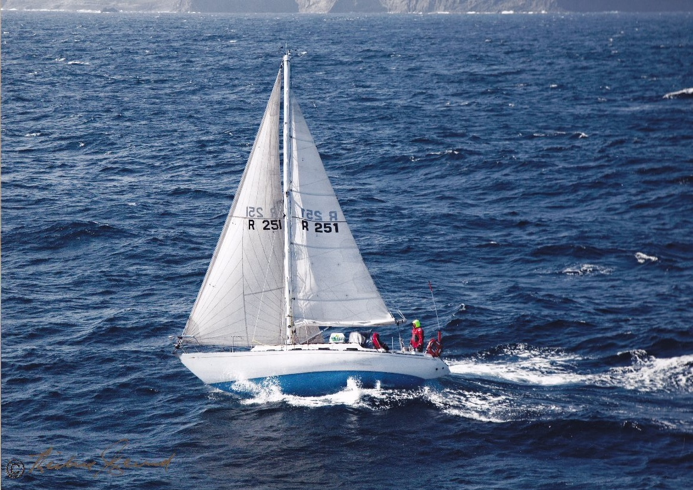
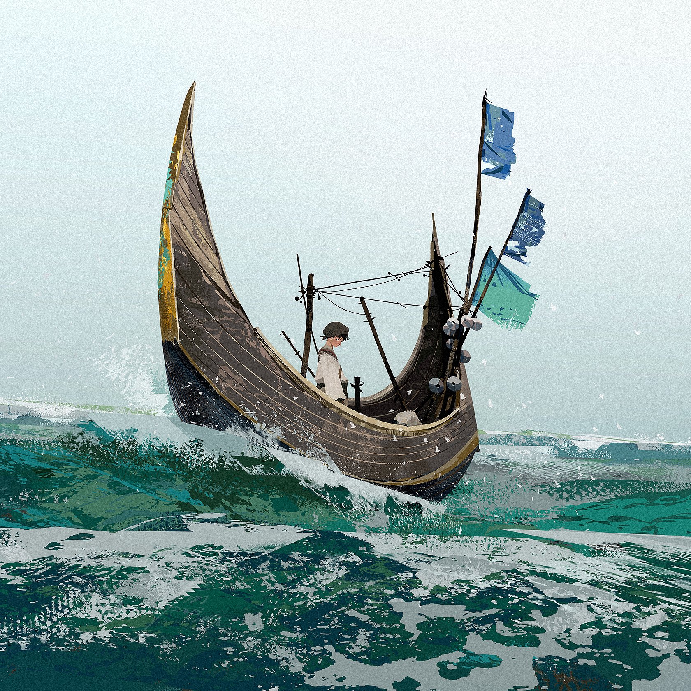
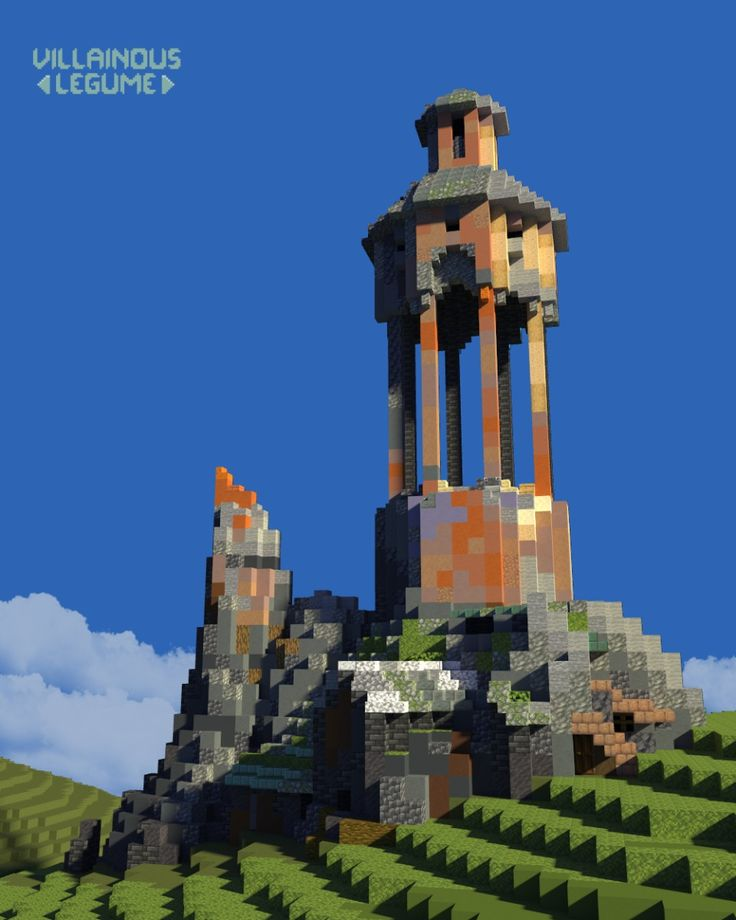
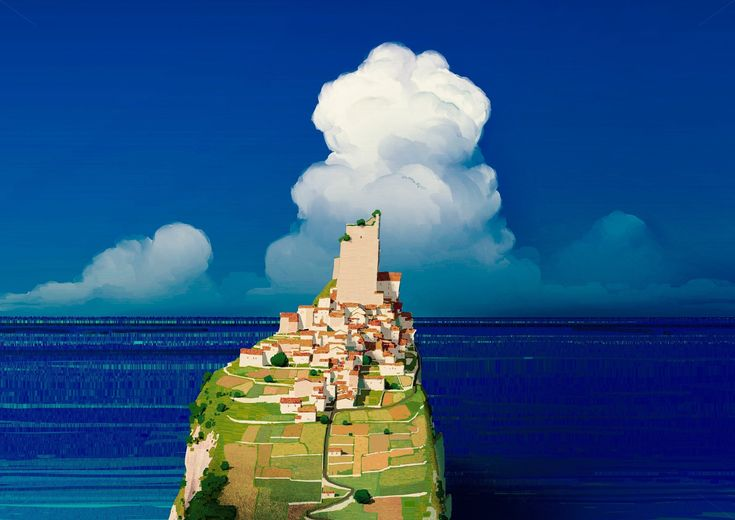
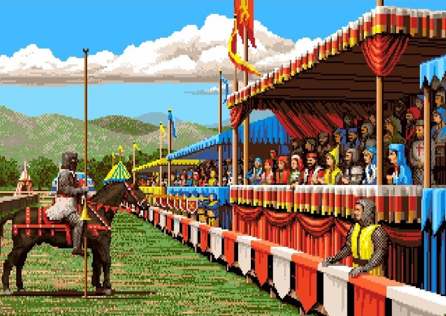

Sennett knows his craft. The Craftsman is an essay about the desire to do a job well as an end in itself, and this definition of craftsmanship, with which Sennett begins his book, has in a certain sense been a leitmotif throughout the writing career of this philosopher of society. The result is a book that's hard to put down. Sennett takes us to various lifeworlds - the medieval workshops of the goldsmith, the kitchens of the Old and New Worlds, or contemporary architectural offices, to name but a few - and links these excursions to considerations on abilities, on the learning and the impact of craftsmanship. This should suffice to sketch out the reasons why Sennett's book - the start of a trilogy on material culture - craftsman, warriors and priests, as well as stranger - demands to be read through to the end. This review is concerned with the importance of this book for a particular circle of readers - practitioners and scholars in the particular management-oriented disciplines - beyond just a general interest in the contemporary social philosophy of labor.

Sennett's considerations begin with his recalling a passing conversation with his teacher Hannah Arendt in the wake of the 1962 Cuban Missile Crisis. In the conversa- tion, Arendt insisted on her standpoint - developed in The Human Condition - that the engineer, or, more generally, the active person is not the master of his own fate. The self-destructive potential of technological development confirmed her in her rational fear that opening Pandora's box - here, technological developments - can prove to have consequences that turn against both their creators and the entire human race if politics does not provide clear guidelines. In a sense, Sennett is indeed writing against this rational fear and its roots in the distinction between animal laborans and homo faber or the division of mental and manual labor: in Sennett's view, the human animal found in animal laborans can indeed think, and thinking does not just begin when the labor is completed.

Taniks, the Scarred, a mercenary known for the theft of Aksor from the Prison of Elders and the murder of Hunter Vanguard Andal Brask, sells his services to any Fallen House willing to pay the right price. It is believed by the Fallen that he is undying, a living huntsman whose physical self is joined with a mix of technologies, each pilfered from legendary treasure troves. But treasure is not the only currency of value to Taniks. His true ambitions rest in the challenge of the feats in front of him, and the rewards simply allow him to exist free of any Kell’s rule.
The Maraid, Book VII, Chapter 10
Abstract: The transmission was broadcasted on all Fallen frequencies. Lacking, at the time, the ability to crack Fallen encryptions, the Master of Crows could discern only that the Fallen Houses were all talking to each other. That was a thing that had never happened before.
The Fallen Houses Unite
This subsection explores the unprecedented cooperation between Fallen Houses.
The Queen's Dilemma
Another subsection at the same level.
Strategic Considerations
A deeper level heading.
The Wolf Attack



Then the Techeuns looked Earthward—and saw the Fallen there becoming bolder. Tactics suggested they were planning a massive attack. We had no interplanetary arrays—no way to warn Earth. We thought we would be able to do nothing but watch.
But then the Wolves arrived from the Jovians. Their army was hundreds of thousands, perhaps millions strong: a dark wave that washed over the Reef, rushing toward the Earth. As soon as we saw them it was clear that if the Wolves reached Earth, the City would fall.

Seemingly oblivious to our existence, the bulk of the Wolf fleet stopped to regroup at Ceres. The Queen's decision was this: attack the House of Wolves, thereby saving Earth but revealing the Reef's presence to any and all enemies in the quadrant; or remain silent, preserving the Reef's invisibility but allowing the City to perish.
Whether we wanted it or not, we've stepped into a war with the Cabal on Mars. So let's get to taking out their command, one by one.
Valus Ta'aurc. From what I can gather he commands the Siege Dancers from an Imperial Land Tank outside of Rubicon. He's well protected, but with the right team, we can punch through those defences, take this beast out, and break their grip of Freehold.
Her Harbingers ripped into Ceres, destroying the asteroid and killing Virixas, Kell of Wolves and more than half his House. The remaining Wolves scattered, burrowing deep into the Belt for cover. There, new claimants to the Kellship quickly arose: Irxis, Wolf Baroness; Parixas, the Howling; and Skolas, the Rabid.
Let's test an anchor link.